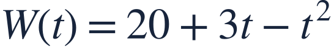

Rates and units
변화율과 단위

A derivative becomes meaningful when its sign, input and units are stated.
도함수는 부호, 입력값, 단위를 함께 말할 때 의미가 분명해집니다.

A derivative becomes meaningful when its sign, input and units are stated.
도함수는 부호, 입력값, 단위를 함께 말할 때 의미가 분명해집니다.
W is water volume in liters; t is time in hours.
W는 리터 단위의 물의 양, t는 시간 단위의 경과 시간입니다.
A negative volume derivative describes water decreasing, not a negative amount of water.
물의 양의 도함수가 음수이면 물이 감소한다는 뜻입니다.
Differentiate volume with respect to time.
물의 양을 시간에 대해 미분합니다.
At hour 3, volume is decreasing at 3 liters per hour.
3시간 시점에서 물의 양은 시간당 3리터씩 감소합니다.
The volume itself remains positive while its rate is negative.
변화율이 음수여도 물의 양 자체는 양수입니다.
A rate in L/h is different from an accumulated volume in L.
L/h 단위의 변화율과 L 단위의 물의 양을 구별하세요.
Interpret W′(1), including its units.
W′(1)의 의미를 단위와 함께 설명하세요.